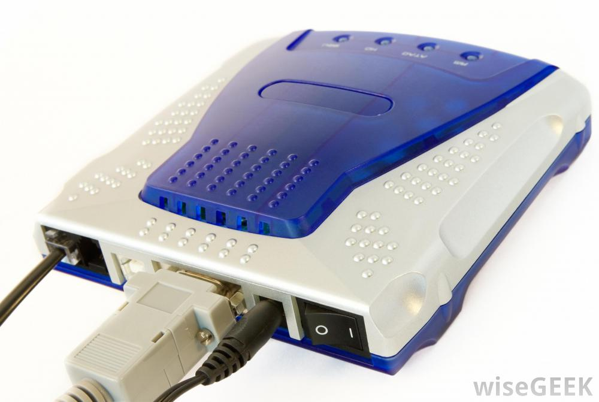
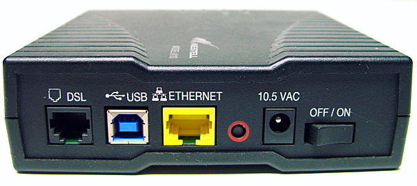
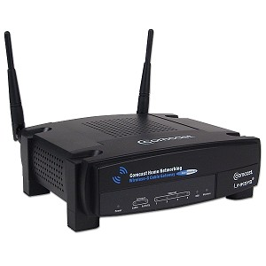

HOW MANY TYPES?

There are some types of modems where been used earlier as transmitting data machines and for telegrams. However, one of the usability of modems earlier was telecommunication device which is a miniprint.

Some of the types in this century:
Dial-Up, the oldest form of internet connection in this century. As it uses the phone line to connect to the ISP. Compared to caple modems or DSL, Dial-Up considered too slow as having only one phone line, there is no availability of talking on the phone and accessing the internet at the same time.
DSL modems, can either be connected to a seperate modem or to the computer directly that dial in through the telephone line.
Caple modems which use coaxial caples as considered to be high speed internet. Basically the ends of the caple are to be at the wall and in the computer.
